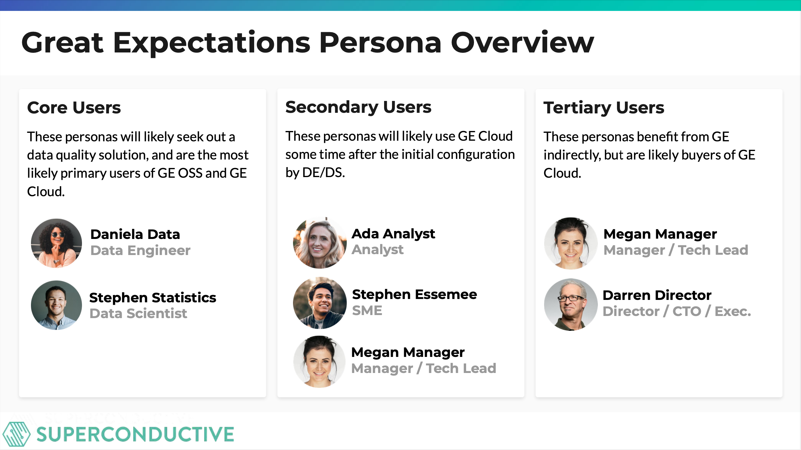

Great Expectations Cloud
Great expectations had a successful OSS product, and wanted to build a paid Cloud version. Cloud version was still in early development. Needed a UX designer to help carry it through to V1. Wanted Observability and Incident Response capabilities. Wanted to understand how concepts were landing with users, and what it would take to make a compelling V1.
Overview
- Great expectations had a successful OSS product, and wanted to build a paid Cloud version
- Understood not only usability concerns but product value
- Cloud version was still in early development. Needed a UX designer to help carry it through to V1
- Wanted Observability and Incident Response capabilities
- Wanted to understand how concepts were landing with users, and what it would take to make a compelling V1
[Image: Great Expectations Console - first version of product]
Research & Discovery

Recruiting people by spamming Great Expectation's Slack channel
- Interviewed existing users for gaps in understanding
- Understood not only usability concerns but product value
- What they loved
- What they didn’t love
- What they were looking forward to


Early Designs
- Sprint based around ideas that the founders, GTM, and Product had
- Much of the promise of GE revolved around “clauses” which were pre-generated packages of tests that users could include in their pipelines


 Viewing data and creating data tests
- Typical desire is to create data tests, but not entirely sure where to start
- Designed through the perspective of someone using the system for the first time
[Graphic: dashboard with suggested expectations]
When viewing data on the dashboard, hover states and expectations hints.
Viewing data and creating data tests
- Typical desire is to create data tests, but not entirely sure where to start
- Designed through the perspective of someone using the system for the first time
[Graphic: dashboard with suggested expectations]
When viewing data on the dashboard, hover states and expectations hints.